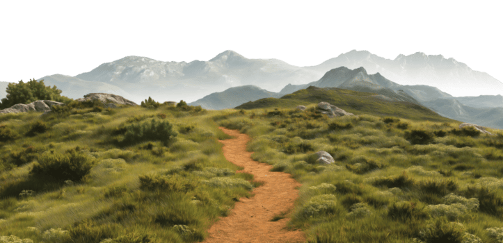
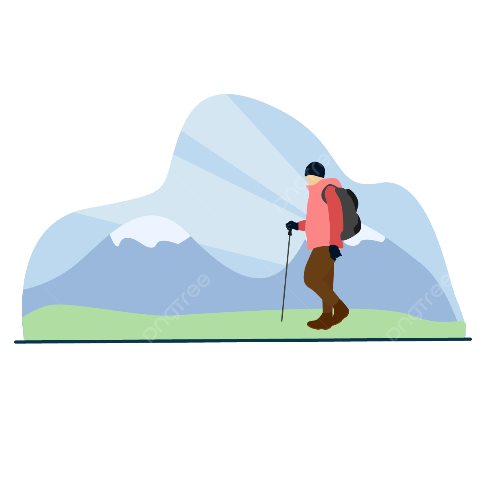
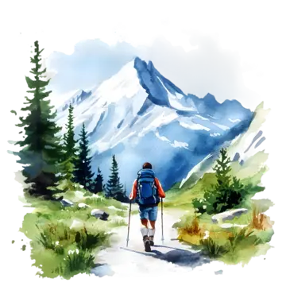
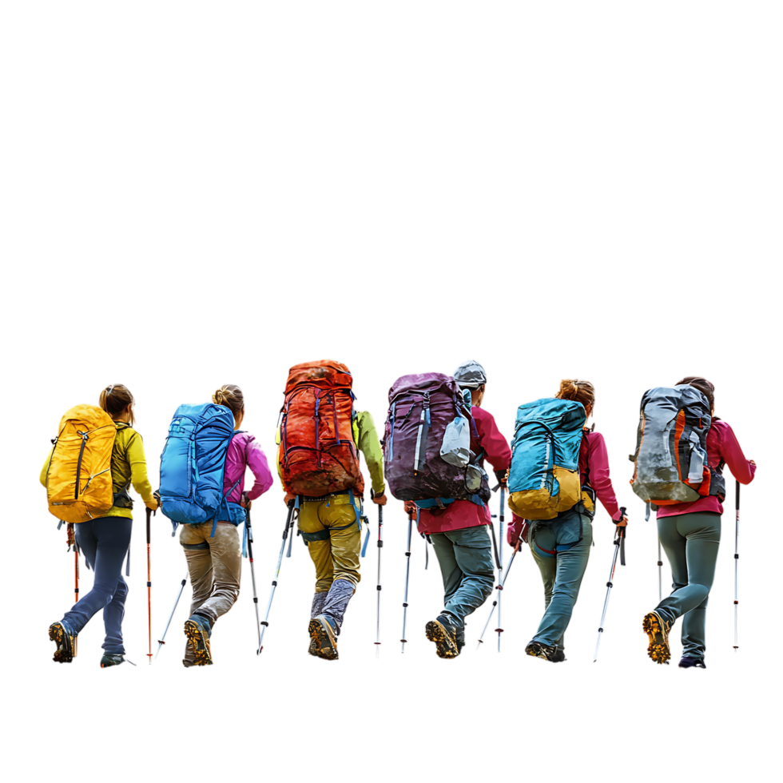
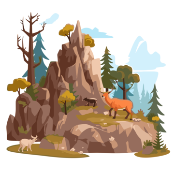

What Wilderness Hiking Is
The wilderness hiking subculture is made up of individuals who choose to explore nature beyond marked trails and developed areas. Unlike casual hikers who follow established paths, wilderness hikers actively seek out remote and less-traveled environments. Their goal is not just to reach a destination, but to experience nature in a more direct and personal way. This makes their approach to hiking more challenging, but also more meaningful.

Mindset
One of the most important characteristics of wilderness hikers is their mindset. These individuals value independence and self-reliance. Because there are no signs or clear paths to guide them, they must depend on their own skills to navigate. This often includes reading maps, using a compass, recognizing landmarks, and understanding terrain. As a result, wilderness hikers tend to be more aware of their surroundings and more responsible for their own safety.
Experience Level
The people in this subculture can vary, but they usually have more experience than beginner hikers. Some are backpackers who spend several days or even weeks in the wilderness, carrying all of their supplies with them. Others may go on shorter trips but still choose to avoid trails and explore less-known areas. Many wilderness hikers prefer to hike alone or in small groups because it allows them to focus and fully connect with the environment without distractions.

Motivation
Another key aspect of this subculture is the motivation behind it. Wilderness hikers are often drawn to the idea of escape. In a world filled with technology, noise, and constant communication, they seek quiet and isolation. Being away from phones, roads, and large crowds allows them to slow down and experience nature more deeply. For many, this is not just a hobby but a way to clear their minds and feel more connected to the world around them.

Community
Even though wilderness hiking can seem solitary, there is still a sense of community. Hikers share knowledge, experiences, and advice through online forums, videos, and conversations. They may exchange information about navigation techniques, safety tips, or unique locations. This sharing of knowledge helps others become more confident and prepared.
Overall Identity
Overall, wilderness hikers are defined by their desire for exploration, independence, and challenge. They are willing to take risks, learn new skills, and step outside of their comfort zones. This subculture is not just about hiking, it is about discovering both the natural world and themselves.
